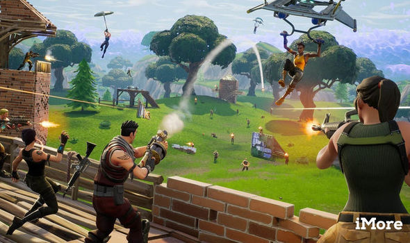
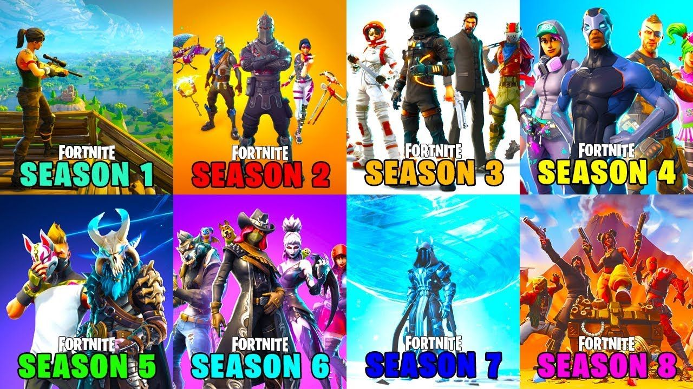

Overview
Fortnite is a FREE third person battle royale that includes the abilty to build and destroy the environment around you.
The game also inludes a second, less popular zombies mode. This mode is not free though, thus often overlooked.

Over the 2.5 years the game has been out, there have been a total of 12 seasons. Each season has its own unique Battle Pass, where players level up to gain cosmetics; these have both free tiers and paid tiers. Each season also includes new weapons, items and map changes.

Why is it popular?
Fortnite's fun art style brought battle royales into the mainstream. Parents were more likely to allow their kids to play a free cartoon style game over one like PUBG. Fortnite was also deployed on alot of platforms: PC, XB1, PS4, Nintendo Switch and Mobile
Who plays it?
Another reason for Fortnite's popularity is: streamers and youtubers. Some popular youtubers include: Ali-A, Muselk and Lazar Beam. Popular streamers include: Ninja, Tfue and Dr. Lupo. Ninja once played with Drake.